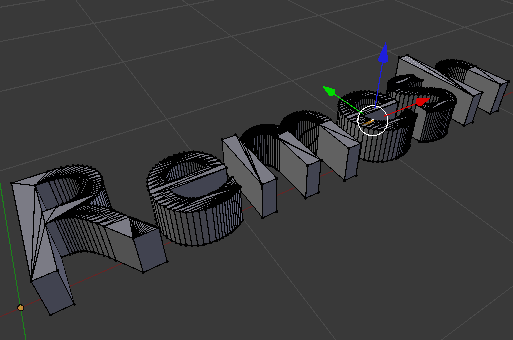
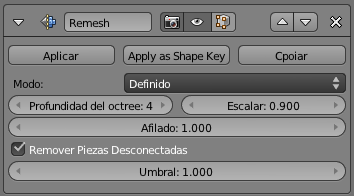
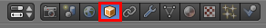
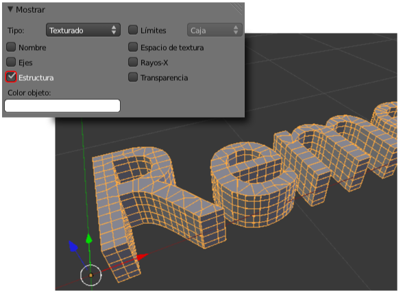

Rehacer malla
Este es un buen momento para hablar de las posibilidades que brinda el modificador Rehacer malla ya que esta relacionado tanto con los destrozos topológicos originados por el modificador Booleano como con los que surgen al convertir un texto, o cualquier otra curva, en una malla.
Recordamos que al final del trabajo con un texto o con una curva es muy habitual convertirla en una malla formada por facetas, usando Objeto/Convert to/Superfice desde curva-meta-texto. Tras esta operación es rigurosamente necesario seleccionar todos los vértices ("A") y eliminar los puntos dobles (Malla/vértices/Eliminar duplicados).
Supongamos que este es nuestro texto resultante (Remesh es el nombre original del modificador Rehacer malla), donde vemos la mala distribución topológica de los lados.
Le aplicamos el modificado Rehacer malla.

Absolutamente nada se altera en el editor vista 3D siempre que estemos en Modo Edición  ; en Modo Objeto
; en Modo Objeto  puede que haya alteraciones drásticas que se solucionarán con dos detalles:
puede que haya alteraciones drásticas que se solucionarán con dos detalles:
- Desactivando la opción Remover Piezas Desconectadas. Eso hace que se muestren todos los conjuntos de vértices independiente (es decir, todas las letras).
- Aumentando profundidad de octree hasta que los caracteres se vean con normalidad.
El modificador parece no estar actuando pero no es cierto. La
modificación está en segundo plano y no lo podemos ver en esas
condiciones. Si ya hemos conseguido que se vea bien el texto en Modo Objeto  aplicamos el modificador y regresamos a Modo Edición
aplicamos el modificador y regresamos a Modo Edición  para ver cómo ha cambiado la malla.
para ver cómo ha cambiado la malla.
Impresionante, sin duda.
No trabajar a ciegas
¿Como podemos alterar parámetros sin tener que llega a Aplicar sin saber las características de la nueva topología?
Este es el truco. Con el objeto seleccionado nos vamos al panel Objeto (no confundir por el icono con Modo Objeto)...
... y en la botonera Mostrar activamos la opción Estructura.

Esto hace visible la malla interna mientras estamos en Modo Objeto  y nos permite jugar con los parámetros del modificador rehacer malla y ver sus consecuencias antes de Aplicar.
y nos permite jugar con los parámetros del modificador rehacer malla y ver sus consecuencias antes de Aplicar.
No olvidaremos desactivar la opción Estructura cuando llegue el momento.